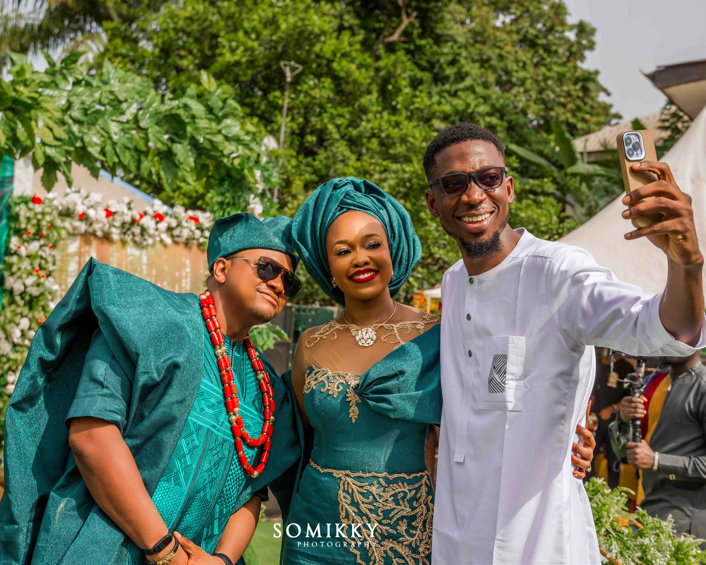

OKAFOR IFEANYI (prog_bio_)
Blue bottle crucifix vinyl post-ironic four dollar toast vegan taxidermy. Gastropub indxgo juice poutine.Blue bottle crucifix vinyl post-ironic Gastropub indxgo juice poutine.
Blue bottle crucifix vinyl post-ironic four dollar toast vegan taxidermy. Gastropub indxgo juice poutine.Blue bottle crucifix vinyl post-ironic Gastropub indxgo juice poutine.
A Wedding Letter for my Chinanya
You’ve always been like a big sister to me and I look up to in more ways than one. You are going to be the most beautiful bride. I could not have hand picked the most perfect man for you than Trey. I am so excited to see what the Lord has planned for you. The best is yet to come.“
“Nicole, I can’t believe you are getting married today. We’ve been talking about this day forever. And today I get to stand beside you as you marry the man of your dreams. I have been praying for you and Ron since the beginning of this journey and I can’t wait to see how amazing you will be as Mr. and Mrs. Phillips.“
“When I think of you all I can think of is the lord’s faithfulness. I am so blessed that God has given me a friend in you for all of these years. Through the good and the bad and the ugly, you have been so loved and so treasured. I can’t help but burst with joy to think that you have found someone who sees just how amazing you are. I am so happy for you!”
“I love you baby! Let’s do the dang thing! I will always be your ride or die. You deserve the best wedding and the happiest marriage. From when we were little, I have always been protective of you and want the best for you. It is with great glee that I see you marry the man of your dreams. Know that you are the best of the best and I wish you nothing but blessings.